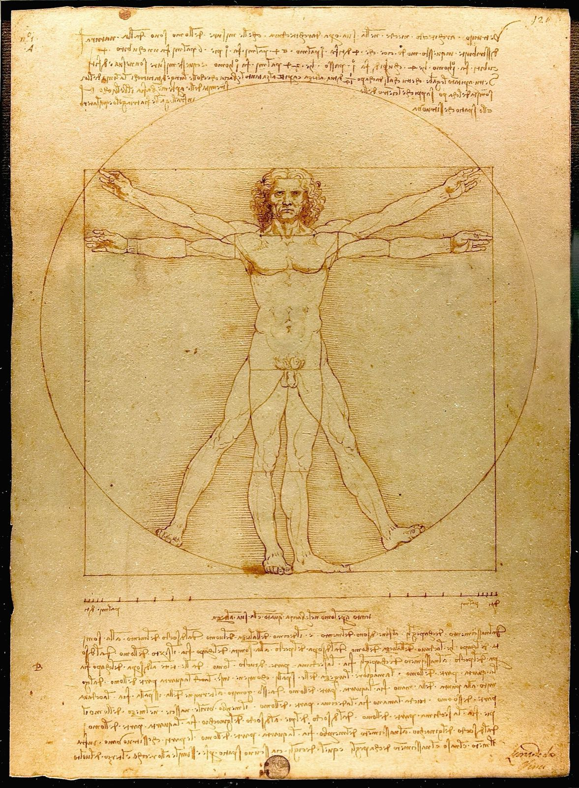

아름다움을 수학으로 나타낼 수 있을까? — 황금비가 가장 아름답다는 말을 믿어도 될까
"황금비 1:1.618, 사람 눈에 가장 아름다운 비율."
베네치아 아카데미아 미술관 4층에는 잠긴 방이 하나 있고, 그 안에 종이 한 장이 보관돼 있습니다. 빛을 오래 쬐면 바랜다는 이유로 좀처럼 걸리지 않는 그림, 레오나르도 다빈치가 1490년 무렵에 그린 「비트루비우스적 인간」입니다. 원과 정사각형 안에 벌거벗은 남자가 두 가지 자세로 겹쳐 서 있습니다[1].

이 그림은 황금비를 설명하는 책과 영상에 단골로 나옵니다. 그런데 레오나르도가 그림 곁에 적어 둔 메모를 읽어 보면 뜻밖입니다. 손가락 넷이 손바닥 하나, 손바닥 넷이 발 하나, 손바닥 스물넷이 사람 하나. 얼굴은 키의 10분의 1, 머리는 8분의 1[1]. 1.618은 어디에도 없습니다. 그려진 인물의 비례도 황금비와 맞지 않고, 글에 나오는 것은 정수끼리의 비뿐입니다[2].
그렇다면 '가장 아름다운 비율'이라는 믿음은 어디서 왔을까요. 거슬러 올라가 보면 이야기 두 개가 겹쳐 있습니다. 하나는 아름다움을 수로 적어 두려 한 2천 년 묵은 꿈이고, 다른 하나는 그 꿈에 한참 뒤에 붙은 이름표입니다.
그리고 결정적으로 — 아름다움의 주소는 18세기에 작품에서 보는 사람 쪽으로 옮겨 갔고, 황금비가 '미의 공식'으로 불린 것은 그 이사가 끝난 뒤의 일입니다.
이 글은 황금비 격자를 얹은 명화 사진 앞에서 고개를 끄덕여 본 분들을 위해 씁니다. 결론부터 말씀드리면, 옛 조각가와 건축가가 믿은 것은 1.618이 아니라 정수로 떨어지는 비례였고, 철학자들은 1750년대에 그 자를 내려놓았으며, 황금비의 전설은 1850년대에야 시작됐습니다. 순서대로 따라가 보겠습니다.
창을 든 남자와 사라진 책
이야기의 처음에는 조각상 하나가 서 있습니다. 기원전 5세기 아르고스의 조각가 폴리클레이토스는 '창을 든 사람'이라는 뜻의 청동상 「도리포로스」를 만들었습니다[3]. 기원전 440년 무렵에 부어 만든 원작은 사라졌고, 지금 볼 수 있는 것은 로마 시대의 대리석 복제입니다. 가장 잘 알려진 것은 폼페이에서 나와 나폴리 국립고고학박물관에 있습니다[4].
이 조각이 특별한 까닭은 책과 짝이었기 때문입니다. 폴리클레이토스는 이상적인 몸의 비례를 수로 풀어 쓴 논문 『카논』을 썼고, 조각은 그 논문의 시범이었습니다. '카논'은 본래 재는 막대, 곧 자를 뜻하는 말입니다[3]. 2세기의 의사 갈레노스는 그 책이 무엇을 적었는지 이렇게 전합니다.
"손가락과 손가락, 모든 손가락과 손바닥과 손목, 이 모두와 아래팔, 아래팔과 위팔, 요컨대 모든 것과 모든 것의 비례."
— 갈레노스가 전하는 『카논』의 내용 (번역, 스탠퍼드 철학 백과 재인용)[5]
아름다움은 부분과 부분, 부분과 전체가 서로 맞아떨어지는 데 있다는 생각입니다. 폴리클레이토스 자신의 말로는 "완성은 많은 수를 거쳐 조금씩 이루어진다"는 한 줄이 전합니다[3]. 스탠퍼드 철학 백과는 이것을 서양의 원초적인 미의 관념이라 부릅니다. 이 조각은 배우는 이도 가르치는 이도 본받을 본보기였고, 그 비례를 그대로 옮기면 아름다움을 틀림없이 얻는다고들 여겼습니다[5].
그런데 그 수가 정확히 무엇이었는지는 아무도 모릅니다. 논문이 전하지 않기 때문입니다. 미술사가 리스 카펜터는 1960년에, 눈에 보이는 조각에서 글로 쓴 카논의 '조리법'을 뽑아내는 데 성공한 사람이 아직 없다고 적었습니다. 1975년 리처드 토빈은 그 말이 여전히 맞다고 썼습니다[3]. 서양에서 가장 이름난 미의 공식은 내용이 빈 채로 전해 온 셈입니다.
글로 남은 자는 로마의 건축가 비트루비우스의 것입니다. 그는 기원전 1세기에 쓴 『건축 십서』 3권 첫 장에서, 신전의 부분들은 잘생긴 사람의 몸처럼 서로 정확한 관계를 이뤄야 한다고 말하고 그 몸의 치수를 늘어놓습니다. 턱에서 머리털이 시작되는 곳까지의 얼굴은 키의 10분의 1, 머리는 8분의 1, 발은 6분의 1, 아래팔은 4분의 1입니다. 등을 대고 누워 팔다리를 벌린 사람의 배꼽에 컴퍼스를 꽂고 돌리면 손끝과 발끝이 원에 닿고, 키와 양팔을 벌린 너비가 같으니 정사각형도 나옵니다[6]. 레오나르도의 그림은 바로 이 대목을 그린 것입니다.
다만 레오나르도는 받아 적기만 하지 않았습니다. 앞서 같은 주제를 그린 이들은 원과 정사각형의 중심을 모두 배꼽에 두려 했는데, 그는 정사각형의 중심을 배꼽 아래로 내려 두 도형을 따로 놓았습니다. 비트루비우스가 6분의 1이라 한 발의 길이도 그의 메모 한쪽에는 7분의 1로 적혀 있습니다[1]. 옛 자를 물려받되 눈금은 자기 눈으로 고친 것입니다. 그래도 한 가지는 그대로였습니다. 아름다움이 몸과 돌 쪽에, 곧 대상 안에 있다는 믿음입니다. 18세기 이전의 철학은 대체로 아름다움을 대상 자체에 놓았습니다[5].
황금비는 언제 '황금'이 되었나
여기까지 1.618은 한 번도 나오지 않았습니다. 이 수는 다른 길로 전해졌습니다. 기원전 300년 무렵 유클리드는 『원론』에서 선분을 나누는 방법 하나를 정의했습니다. 전체와 큰 조각의 비가 큰 조각과 작은 조각의 비와 같아지도록 자르는 것으로, 그는 이를 '외중비'라 불렀습니다. 값은 1.618…로 끝없이 이어지는 무리수이고, 정오각형과 별 모양의 기하학에서 중요한 비입니다[2]. 기하학의 도구였지, 아름다움의 기준으로 내놓은 것은 아니었습니다.
1509년 루카 파촐리가 이 비에 '신성한 비례'라는 이름을 붙인 책을 냈고, 레오나르도가 삽화를 그렸습니다. 레오나르도가 그림에 황금비를 썼다는 이야기는 대개 이 인연에 기댑니다. 그러나 파촐리가 보기 좋은 비례로 권한 것은 이 비가 아니라 비트루비우스식 비례였고, 그가 황금비를 권했다는 해석은 1799년의 한 오류에서 비롯됐다는 지적이 있습니다[2]. 수학자 조지 마코스키가 살펴본 레오나르도 전기들에도, 파촐리의 책에 넣은 삽화 말고는 그가 그림이나 소묘에 이 비를 썼다는 흔적이 없었습니다[7].
'황금'이라는 이름은 더 늦습니다. 지금까지 알려진 가장 이른 용례는 1789년 독일의 한 물리학 사전이고[2], 수학책에서는 1835년 마르틴 옴의 교과서가 처음으로 꼽힙니다. 영어로는 1875년 브리태니커 백과사전의 미학 항목이 처음입니다[7]. 이 이름을 널리 퍼뜨린 사람은 독일의 아돌프 차이징이었습니다[8]. 그는 1854년에 낸 책에서 황금비를 자연과 예술의 아름다움을 꿰는 보편 법칙으로 내세웠고, 파르테논 신전이 이 비로 지어졌다는 주장도 이 책에서 처음 나왔습니다[9].
그 주장에 자를 대 보면 어떻게 될까요. 마코스키는 1992년 논문에서 다른 책들에 실린 파르테논의 치수를 가져다 그대로 나눠 보았습니다. 너비 101피트 3.75인치를 높이 45피트 1인치로 나누면 약 2.25이고, 길이를 너비로 나눠도 약 2.25입니다. 삼각 지붕 꼭대기까지의 높이 59피트로 나누면 약 1.71인데, 이것도 그가 넉넉하게 잡아 준 허용 범위 1.58~1.66을 벗어납니다[7]. 2.25는 9 대 4, 곧 정수의 비입니다.
2014년에는 한 연구자가 기원전 5세기부터 기원후 2세기까지의 신전 15곳, 기념 무덤 18기, 석관 8점, 묘비 58점의 치수를 살폈습니다. 결론은 고전기인 기원전 5세기의 그리스 건축에는 황금비가 전혀 없다는 것이었습니다[10].
모나리자도 사정이 비슷합니다. 얼굴에 직사각형을 두르면 황금비가 나온다는 말이 많지만, 황금비의 역사를 책으로 쓴 천체물리학자 마리오 리비오는 레오나르도가 이 비를 의식하고 썼다는 기록이 없고, 그 직사각형을 정확히 어디에 그려야 하는지도 정해져 있지 않다고 짚습니다[11]. 마코스키는 이런 식의 찾기에 '피라미드학의 오류'라는 이름을 붙였습니다. 복잡한 대상에는 잴 길이가 넘치도록 많아서, 참을성 있게 이리저리 맞추다 보면 원하는 수가 나오게 마련이라는 것입니다[7].
미리 말씀드려야 할 게 있습니다. 황금비를 일부러 쓴 작품이 없다는 뜻은 아닙니다. 살바도르 달리는 「최후의 만찬의 성찬」의 화폭을 황금 직사각형으로 잡았고, 르코르뷔지에는 이 비로 '모뒬로르'라는 치수 체계를 짰습니다[2]. 둘 다 20세기, 전설이 퍼진 뒤의 일입니다. 또 고대 그리스인이 이 비를 아름답게 여겼다고 적는 연구자도 있어서[8], 옛사람들의 속마음에 대해서는 학자들의 말이 하나로 모이지 않습니다. 다만 건물에 댄 자는 지금까지 그 편을 들어 주지 않았어요.
1757년, 자와 컴퍼스를 내려놓다
황금비가 미의 법칙으로 내세워지기 백 년쯤 전에, 비례라는 자 자체가 도전을 받았습니다. 1757년 에드먼드 버크는 『숭고와 아름다움의 관념의 기원에 관한 철학적 탐구』에서 여러 절을 들여 '비례는 아름다움의 원인이 아니다'를 식물, 동물, 사람 순으로 따졌습니다. 백조는 목이 몸통보다 길고 꼬리는 아주 짧습니다. 공작은 목이 짧고 꼬리가 목과 몸통을 합친 것보다 깁니다. 둘 다 아름답다면 어느 쪽이 '아름다운 비례'일까요[12]. 사람의 몸에 대해서는 이렇게 썼습니다.
"사람 몸의 모든 부분에 어떤 비례든 마음대로 정해 보라. 화가가 그것을 빠짐없이 지키고도, 마음만 먹으면 아주 못생긴 인물을 그려 내리라고 장담한다."
— 에드먼드 버크, 『숭고와 아름다움의 관념의 기원에 관한 철학적 탐구』 3부 4절, 1757 (번역)[12]
버크는 레오나르도가 그린 바로 그 도식도 겨냥합니다. 건축의 비례를 사람 몸에서 따왔다는 말을 뒷받침하려고 팔을 한껏 벌린 사람을 세우고 그 둘레에 정사각형을 그리지만, 사람이 그렇게 억지스러운 자세로 서 있는 일은 드물고, 그 모습에서 떠오르는 것은 정사각형이 아니라 십자가라는 것입니다. 그는 아름다움이 측량에 속하는 관념이 아니며 계산이나 기하학과 상관이 없다고 못 박습니다. 정해 둔 치수와 눈앞의 아름다움이 어긋나거든 "자와 컴퍼스를 내려놓고" 다른 원인을 찾으라고도 말합니다[12].
같은 해 데이비드 흄은 「취미의 기준에 관하여」를 발표했습니다[13]. 이 글에는 자주 인용되는 문장이 있습니다. "아름다움은 사물 자체의 성질이 아니다. 그것은 사물을 바라보는 마음 안에만 있다." 그런데 흄은 이 말을 자기 결론으로 내놓지 않았습니다. 취미에는 기준이 있을 수 없다고 보는 "어떤 부류의 철학"의 주장으로 소개한 다음, 곧바로 반례를 듭니다. 오길비라는 시인이 밀턴과 맞먹는다고 우기는 것은 두더지가 쌓은 흙무더기가 테네리페산만큼 높다고 우기는 것과 다를 바 없다는 것입니다[14].
흄이 대신 꺼내는 것은 『돈키호테』의 포도주 이야기입니다. 산초의 친척 두 사람이 좋다고 소문난 포도주 통을 맛봅니다. 한 사람은 좋은 술인데 가죽 맛이 조금 난다고 하고, 다른 사람은 쇠 맛이 난다고 합니다. 둘은 실컷 비웃음을 샀습니다. 통을 다 비우고 보니 바닥에 가죽끈이 달린 낡은 열쇠가 있었습니다[14].
비유로는 이만한 것이 없습니다. 맛은 혀에서 나지만, 통 바닥에는 열쇠가 있습니다. 흄은 아름다움과 추함이 대상의 성질이 아니라 전적으로 느낌에 속한다고 하면서도, 대상에는 그런 느낌을 일으키기에 알맞은 성질이 있다고 덧붙입니다. 그래서 그가 찾은 기준은 수가 아니라 사람입니다. 분별력이 강하고, 감각이 섬세하고, 훈련을 쌓았고, 많이 견주어 보았고, 편견을 걷어 낸 비평가들이 함께 내리는 판정이 취미와 아름다움의 참된 기준이라는 것입니다[14].
새 주소에 붙은 이름, 미학
주소가 바뀌니 그 동네를 다룰 학문의 이름도 필요해졌습니다. 1735년, 스물한 살의 알렉산더 고틀리프 바움가르텐이 할레 대학에 낸 시에 관한 논문에서 '감각되고 상상되는 것에 관한 학문'이라는 뜻으로 미학(aesthetica)이라는 말을 처음 썼습니다. 그는 1750년과 1758년에 『미학』 두 권을 냈지만, 처음 구상한 분량의 3분의 1에 조금 못 미친 채 끝났습니다[15]. 그 책 첫 장에 이런 정의가 나옵니다.
"미학의 목적은 감성적 인식 그 자체의 완전함, 곧 아름다움이다."
— 바움가르텐, 『미학』 14절, 1750 (번역, 스탠퍼드 철학 백과 재인용)[15]
앞 세대의 철학자 볼프는 아름다움을 '완전함을 감각으로 아는 것'이라 했습니다. 바움가르텐은 낱말의 순서를 뒤집어 '감각으로 아는 일의 완전함'이라 했습니다. 순서 하나가 바뀌었을 뿐인데, 아름다움의 무게가 대상에서 느끼는 쪽으로 반 걸음 옮겨 갔습니다. 다만 반 걸음입니다. 같은 백과는 그를 새 땅을 정복한 사람이 아니라 건너편 기슭에서 바라본 사람에 견줍니다[15]. 칸트를 다룬 항목은 그를 아름다움을 여전히 대상의 객관적 성질로 본 합리주의 전통에 넣습니다[16]. 이름을 지은 사람과 이사를 마친 사람은 달랐던 셈입니다.
매듭은 1790년 칸트의 『판단력비판』이 짓습니다. 칸트에게 아름답다는 판단은 즐거움의 느낌에 바탕을 둡니다. 그러면서도 "내 입맛에는 맞다"는 말과 달리, 보는 사람이면 누구나 그렇게 판단해야 마땅하다는 요구를 담습니다. 그리고 그 요구는 증명할 수 없습니다. 어떤 것을 아름답다고 판단하도록 남을 강제할 규칙은 없다는 것입니다[16]. 비례를 그대로 옮기면 아름다움이 보장된다던 카논의 약속에, 2천2백여 년 만에 도착한 답장이라 할 만합니다.
그래서 자를 사람에게 댔다
아름다움이 보는 사람 쪽에 있다면, 재려는 사람은 이제 사람을 재야 합니다. 독일의 구스타프 페히너가 그렇게 했습니다. 그는 원리부터 세우고 내려오는 대신 사람들이 실제로 무엇을 좋아하는지부터 모으는 '아래로부터의 미학'을 내걸었고, 차이징의 책에 자극받아 황금 직사각형을 실험대에 올렸습니다[8].
1876년에 보고한 실험은 단순했습니다. 넓이는 같고 가로세로 비만 다른 흰 직사각형 열 개를 검은 탁자에 흩어 놓습니다. 정사각형(1:1)부터 2.5:1까지입니다. 가장 마음에 드는 것을 고르게 했더니 응답 347건 가운데 35.0%가 황금 직사각형을 골랐습니다. 바로 옆의 1.5:1이 20.6%, 1.77:1이 20.0%였습니다. 반대로 가장 싫은 것으로는 2.5:1이 40.9%, 정사각형이 31.9%를 받았고, 황금 직사각형을 꼽은 사람은 없었습니다[8].
이 숫자가 '황금비는 미의 기준'이라는 말의 근거로 오늘까지 인용됩니다. 그런데 세 가지를 함께 읽어야 합니다. 첫째, 35%는 응답 100건 가운데 35건입니다. 셋 중 둘은 다른 직사각형을 골랐습니다. 둘째, 페히너는 미술관 스물두 곳에 걸린 그림 2만 점가량의 가로세로 비도 조사했는데, 예상과 달리 황금비가 아니었습니다. 세로로 긴 그림은 평균 5:4, 가로로 긴 그림은 4:3쯤이었습니다[8]. 1999년 화가들의 작품 565점을 조사한 연구에서도 화폭 두 변의 비는 평균 1.34였습니다[2]. 셋째, 사람들이 왜 그 직사각형을 좋아하느냐는 물음에 페히너 자신은 "모르겠다"고 답했습니다[8].
그 뒤 이어진 재현 실험의 성적은 뒤섞여 있습니다. 1974년의 한 연구는 황금 직사각형 선호가, 보여 준 직사각형들 가운데 그것이 놓인 자리 때문에 생긴 결과라고 보았습니다. 1980년의 연구는 페히너가 내세운 현상에 "꽤 괜찮은 증거"가 있다면서도, 중요한 것이 꼭 황금비인지 1.5나 1.6 같은 비슷한 비인지는 "매우 불분명하다"고 했습니다[11]. 1995년의 종합 검토는 효과가 실제로 있어 보이지만 실험 방법에 쉽게 흔들린다고 정리했고[8], 2010년의 한 논문은 최근 연구들이 페히너의 결과를 예외적이거나 방법에서 비롯된 것으로 본다고 요약했습니다[17]. 아직 판가름 나지 않은 물음입니다. 페히너의 표에서 안전하게 읽을 수 있는 것은, 사람들이 정사각형과 아주 길쭉한 것을 꺼렸다는 정도예요.
숫자보다 중요한 게 하나 있습니다. 페히너가 잰 것은 직사각형이 아니라 사람이었습니다. 폴리클레이토스는 조각에 자를 댔고, 페히너는 조각을 보는 눈에 자를 댔습니다. 황금비를 확인하려던 실험조차 이미 새 주소에서 치러진 것입니다.
필자 한마디
황금비 격자를 얹은 그림을 보고 감탄한 일이 부끄러울 까닭은 없습니다. 아름다움 뒤에 숨은 수 하나를 찾고 싶은 마음은 폴리클레이토스 때부터 내려온 아주 오래된 바람이니까요.
"자는 그림에 댈 때보다 그림 앞에 선 사람에게 댈 때 더 많은 것을 알려 줍니다." 비례가 쓸모없다는 말이 아닙니다. 흄의 포도주 통 바닥에는 분명히 열쇠가 있었습니다. 다만 그 쇠 맛을 알아챈 것은 통이 아니라 혀였습니다.
다음에 「비트루비우스적 인간」을 보시면 원과 정사각형보다 그 곁의 메모를 떠올려 주세요. 옛 책의 치수를 자기 눈으로 다시 재어 본 사람의 흔적입니다.
정리하자면 이렇습니다. 고대의 조각가와 건축가는 아름다움을 부분들의 비례에서 찾았고, 글로 남은 그 비례는 10분의 1, 8분의 1 같은 정수의 비였습니다. 1757년의 버크와 흄, 1790년의 칸트를 거치며 아름다움의 자리는 대상에서 보는 사람 쪽으로 옮겨 갔습니다. 황금비를 미의 보편 법칙으로 내세운 것은 그 뒤인 1854년의 차이징이었고, 파르테논과 모나리자의 황금비는 실측이나 기록으로 확인되지 않습니다. 1876년 페히너의 실험에서 황금 직사각형은 1등이었지만 고른 사람은 셋 중 하나였고, 그 뒤의 재현 결과는 엇갈립니다.
오늘 마음에 든 그림이나 사진이 있다면 물어보세요. 그 아름다움은 화면의 어느 치수에 있었을까요, 아니면 그것을 보던 눈 쪽에 있었을까요.
이 글은 일반적인 정보 제공을 위한 것입니다. 황금비 선호를 다룬 심리학 연구는 결론이 엇갈리고, 고대 비례론의 복원에는 추정이 섞여 있습니다. 인용하실 때는 원 자료를 함께 확인하세요.
참고문헌
- 위키백과. Vitruvian Man (백과; 보관·전시는 Isaacson 2017, 중심 이동은 Kemp 2019, 메모 번역은 Magazù 등 2019 인용). 링크 ↩
- 위키백과. Golden ratio (백과; 파촐리·용어의 역사는 Livio 2002와 Cain 2024, 화폭 565점 조사는 Olariu 1999 인용). 링크 ↩
- 위키백과. Polykleitos (백과; 필론 전승은 Stewart 1990, 카논 복원 논의는 Tobin 1975와 Carpenter 1960 인용). 링크 ↩
- 위키백과. Doryphoros (백과). 링크 ↩
- Sartwell, C. Beauty. Stanford Encyclopedia of Philosophy, 2012(2026년 6월 개정). 갈레노스 인용은 Pollitt 1974 재인용. 링크 ↩
- Vitruvius. The Ten Books on Architecture, Book III, ch. 1. M. H. Morgan 옮김, Harvard University Press, 1914 (Project Gutenberg). 링크 ↩
- Markowsky, G. Misconceptions about the Golden Ratio. The College Mathematics Journal 23(1): 2–19, 1992. 링크 ↩
- Green, C. D. All that glitters: a review of psychological research on the aesthetics of the golden section. Perception 24: 937–968, 1995. 링크 ↩
- 위키백과. Parthenon (백과; 차이징의 파르테논 주장은 Gamwell 2016 인용). 링크 ↩
- Foutakis, P. Did the Greeks Build According to the Golden Ratio? Cambridge Archaeological Journal 24(1): 71–86, 2014 (초록). 링크 ↩
- Livio, M. The golden ratio and aesthetics. Plus Magazine, 2002-11-01 (Godkewitsch 1974, McManus 1980 인용). 링크 ↩
- Burke, E. A Philosophical Inquiry into the Origin of our Ideas of the Sublime and Beautiful, Part III, §§2–4. The Works of the Right Honourable Edmund Burke, vol. 1 (Project Gutenberg). 출간 연도 1757은 [5]의 서지 기준. 링크 ↩
- Gracyk, T. Hume's Aesthetics. Stanford Encyclopedia of Philosophy, 2003(2020년 개정). 링크 ↩
- Hume, D. Of the Standard of Taste (1757), ST 7–8, 15–16, 23. Hume Texts Online. 링크 ↩
- Guyer, P. 18th Century German Aesthetics. Stanford Encyclopedia of Philosophy, 2007(2026년 5월 개정). 링크 ↩
- Ginsborg, H. Kant's Aesthetics and Teleology. Stanford Encyclopedia of Philosophy, 2005(2022년 개정). 링크 ↩
- Phillips, F., Norman, J. F., Beers, A. M. Fechner's Aesthetics Revisited. Seeing and Perceiving 23: 263–271, 2010. 링크 ↩